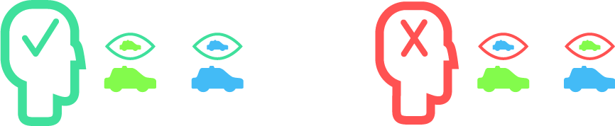

The Taxi-cab Problem
A cab was involved in a hit and run accident at night. Two cab companies, the Green and the Blue, operate in the city. 90% of the cabs in the city are Green and 10% are Blue.
A witness identified the cab as Blue. The court tested the reliability of the witness under the same circumstances that existed on the night of the accident and concluded that the witness correctly identified each one of the two colors 80% of the time and failed 20% of the time.
What is the probability that the cab involved in the accident was Blue rather than Green knowing that this witness identified it as Blue?
The Taxi-cab Problem
80% - Congratulations, like most people, including me, you’ve been fooled by your intuitions and got this completely wrong. Even though it doesn’t feel like it, what the witness saw is only a part of the picture.
Us humans are very bad at looking at the big picture of things. That’s why most people, including me, think 80% is the right answer when they first read about this problem, while the actual answer is 30% (we’ll see why soon).
But why are we even talking about this?
This problem shows how people tend to ignore very important information when they look at the world, and when we get the world wrong, we make bad decisions.
Let’s pretend for a moment there was no witness. (sounds sketchy I know)
The original problem had a city with 90% green cabs and 10% blue cabs.
To make it simpler, let’s look at a small town with just 9 green cabs and 1 blue cab.
But 9 and 1 is boring, go ahead and drag the cyan slider to 6 blue and 4 green cabs.
that’s much nicer! now let’s
Welcome to our small town,
let’s call it Taxidentville.
The circles show the 10 places where an accident might happen.
Gladly, only one accident will happen.
to prove it's random, you shuffle & place the accident
Good, but which cab had the accident?
Like the accident, let’s place the cabs randomly.
(you can still change the number of green and blue cabs)
Blue cab accidents:
Ah ha! A cab had the accident!
But remember, this is only one possibility of many.
As we can see, when there’s no witness, counting the blue cabs is the best guess we have.
what would happen if we run the simulation...
feel free to play around some more,
when you’re ready, let’s continue:
Our witness is only correct some of the time.
We simulate a better or worse witness with the new slider at the top right.
A 60% correct witness has a 60% chance to report the truth.
0% = always wrong/lying | 50% = completely random | 100% = always right
The eyes above the cabs show us what the witness would see.

Although this example only has green cabs, any non-perfect witness would still “see” a blue cab in some cases.
When a witness says a blue cab had the accident, we can look at the cabs with the blue eyes, and see how many of them are really blue. In this case, none of them are blue!
So a 60% accurate witness doesn’t have to be 60% correct! In a town that only has green cabs, a witness that claims a blue cab had the accident would always be wrong (0% correct)!
but the witness isn’t always useless,
go ahead and change half of the cabs to blue.
When half of the cabs are blue and half are green, the witness gives us our best guess.
If we look at cases where the cab was seen as blue, we can tell the real ones match our witness's accuracy.
60% = 3 really-blue out of 5 seen-as-blue cabs
are you ready for a challenge? let’s play with the sliders a bit
To continue,
set a scenario in which our witness would see:
10% chance - a blue cab that is actually blue
20% chance - a blue cab that is in fact green
70% chance - a green cab that is actually green
Well done!
Have you noticed? You’ve recreated our original question!
90% green cab, 10% blue, 80% accurate witness.
Only 1 out of the 3 “blue” cabs is really blue,
that’s nearly 30%.
So, we’ve learned that in order to know the chance the witness is actually right in saying the cab is blue, we need to look at all of the possibilites of witness-seeing-blue-cabs, and count how many of them are real-blue and not mistake-blue.
(blue cabs seen as blue) out of
(blue cabs seen as blue + green cabs seen as blue)
feel free to play around some more,
when you’re done, let’s go
Now let’s run the full simulation many times, and compare our calculated guess with the actual results.
Witness accuracy:
Our calculated guess:
Witness said blue:
Witness was correct in saying “blue”:
Well, I really hope that made sense.
created by
Gal Green
(not blue)for the Explorable Explanations Jam
My thanks to:
Erez Reznikov - for some graphic design tips
Nicky Case - for the inspiration and making this jam happen
My boss Alon - for letting me miss some work to make the jam deadline
You - for checking this out
Share it: Facebook, Twitter, Mail
Find me: Facebook, LinkedIn |
Find the code (open-source): GitHub
Based on the original taxicab problem by Amos Tversky and Daniel Kahneman (1982)